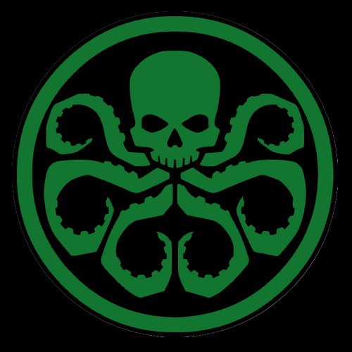
Hydra (Terre-616)

Hydra est une organisation terroriste internationale millénaire.
Elle ou son incarnation existait déjà dans ces civilisations aussi variées que l'Égypte pharaonique, la Chine impériale, et des États-nations aussi différents que l'Allemagne nazie et les États-Unis d'Amérique.
La plus récente réincarnation a été créée à partir des vestiges de l'Allemagne Nazie et du Japon Impérial.
Son idéologie a évoluée au fil des décennies, mais la méthodologie d'Hydra est restée cohérente, qui est celui de la suprématie et de l'élitisme.
Non seulement Hydra, mais le Baron Von Strucker lui-même a accepté à des postes de direction ceux que la version d'Hydra après la Seconde Guerre Mondiale aurait rejetés au cours de la première décennie après la fin de la guerre.
Par conséquent, ils ont accepté non seulement des Caucasiens et des Asiatiques, mais également des recrues d'autres groupes raciaux et ethniques, ainsi que des mutants, des expériences génétiques et des même morts-vivants.
Héritage extraterrestre :
À une époque pré-humaine, une cabale de reptiles Extraterrestres à sang froid est arrivée sur Terre, prévoyant de créer un héritage du mal.
Ils ont planté la graine qui allait plus tard donner naissance à de futurs empires du mal.
Égypte Ancienne :
En 2620 av. J.-C., la race Brood a attaqué l'Égypte et tué le Pharaon Khasekhemwy Khasekhemui, mettant fin à la Deuxième Grande Dynastie.
Imhotep a dirigé une coalition de guerriers, comprenant En Sabah Nur et le Moon Knight de cette époque, et a anéanti les extraterrestres.
Le Bouclier est resté à l'Ouest, menant à la formation de la Confrérie du Bouclier.
Quant à sa Lance, elle est allé à l'Est, où elle résidait.
Pour les archives modernes, les premières origines d'Hydra remontent à la Troisième Dynastie d'Égypte.
Chine :
En 114 après J.-C., sous la Dynastie Han, Zhang Heng, membre de la Confrérie du Bouclier, était le gardien de la Lance.
Il a rencontré la "Madone" Céleste enceinte et a évité la consommation de la Terre ou de la Lune pour nourrir l'enfant Céleste en suggérant l'utilisation du Soleil comme lieu de gestation.
Zhang Heng a utilisé la lance à certaines occasions, pour faire respecter les objectifs de la Confrérie et protéger son pays.
Grâce à la semence maléfique des reptiles extraterrestres, les deux parties de la grande Fraternité se sont corrompues : tandis que l'Ouest, la Confrérie du Bouclier, s'est repliée sur elle-même et s'est dévorée, l'Est s'est envolé, se dissipant de génération en génération.
La Confrérie Orientale de la Lance, maintenant simplement désignée par son ennemi, le Shield, comme la Bête, s'est propagée, s'enracinant dans toutes les facettes de la société humaine -science, magie, politique- comme un monstre à plusieurs têtes.
A l'apogée de l'Orient, le Dernier Califat, les trois frères de la Causalité (l'incarnation du temps ramifié : ce qui est, ce qui est venu avant, ce qui sera) ont été cachés à la demande de l'Homme éternel, Michel-Ange.
18ème siècle :
Après la Renaissance, toutes les références à l'ancienne organisation d'Hydra ont cessé d'apparaître.
Seconde Guerre Mondiale :
En 1941, le Baron Wolfgang von Strucker, chef de la Société de Thulé Nazie, a donné naissance à la première incarnation moderne d'Hydra en tant que sa force paramilitaire personnelle, avec son existence même tenue secrète à la connaissance d'Hitler.
Leur nom vient de la redoutable Hydre de Lerne, une créature mythique a plusieurs têtes, tuée par Héraclès.
En 1941 Strucker a été contacté par la cabale de ninjas connue sous le nom de la Main, qui venait de rompre un accord de longue date avec le cerveau du crime Romulus et voulait former de nouvelles alliances.
Afin de gagner la loyauté de la Main, Strucker a approché et capturé la jeune agente russe Natalia Romanova, l'amenant à Madripoor comme cadeau pour les ninjas, qui essayaient de transformer la fille en Maître Assassin de la cabale.
Cependant Strucker n'était pas au courant que Natalia était secrètement un agent de Romulus envoyé pour tuer le Jonin de la Main, et alors qu'elle était prête à accomplir sa mission lors du rituel du Maître Assassin, Logan, un autre agent de Romulus et ami de Natalia, interrompit la cérémonie, et a tué le Jonin, cherchant à éviter de faire à nouveau de Natalia un tueur.
Captain America et Ivan Petrovich ont aidé Logan à combattre la Main, tandis que Strucker s'est échappé dans le chaos de la bataille.
Plus tard en 1941, Strucker mena une opération secrète Hydra en Tunisie, utilisant comme couverture une autre opération nazie au même endroit.
Après que Captain America, son acolyte Bucky et Logan soient entrés dans le quartier général d'Hydra et aient tué un imitateur de Strucker, le véritable emplacement de Strucker a été découvert par Logan, qui a reçu l'ordre de Seraph, un agent Madripoor de Romulus, de ne pas le tuer en raison de nouveaux accords entre lui et Romulus.
Capturé par l'Armée Américaine, Strucker a ensuite été libéré par Logan et plus tard secouru par son allié nazi, le Baron Heinrich Zemo, arrivé en Tunisie avec des troupes de soutien.
Hydra Japonaise :
En 1943, l'officier nazi Crâne Rouge, observant comment le Reich d'Hitler tombait en morceaux, a commencé à créer une organisation secrète au Japon, fusionnant plusieurs sociétés criminelles clandestines, dont la Main, avec des membres fugitifs de l'Allemagne nazie et du Japon Impérial.
Le Crâne Rouge a ensuite confié la direction de cette nouvelle organisation conjointe basée dans l'Océan Pacifique à un Shinto impérialiste.
Lorsqu' Hitler ordonna la mort du baron Strucker après ses nombreux échecs, le Crâne Rouge a aidé son collègue nazi à atteindre le Japon, où il a rejoint son organisation, qu'il a rebaptisée Hydra en tuant son chef suprême, prenant le contrôle de l'organisation.
En tant que Suprême Hydra, Strucker a créé la base Tsunami d'Hydra, mieux connu sous le nom d'île d'Hydra.
En aidant à la naissance de la toute nouvelle Hydra de Strucker, le nouveau Jonin de la Main a tenté d'unifier les deux organisations en introduisant les arts occultes et le culte de la Bête à l'intérieur d'Hydra.
Strucker, qui savait que l'occultisme avait déjà conduit Hitler au bord de la folie, combattit le Jonin, remportant la bataille qui séparerait Hydra et la Main pendant un certain temps.
Hydra est rapidement entré en conflit avec le Capitaine Simon Savage et les Pillards Leatherneck.
L'équipage a été capturé, mais ils ont pu se frayer un chemin vers la base juste à temps pour sauver leurs hommes d'un peloton d'exécution, et purent s'échapper, l'île d'Hydra étant partiellement détruite.
Membres notables :


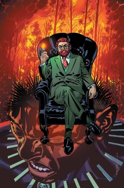


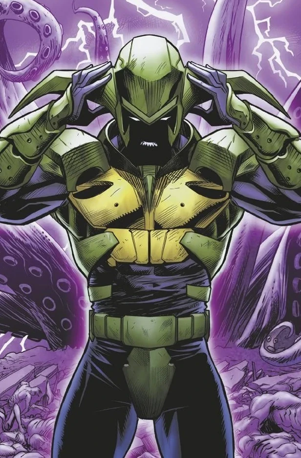
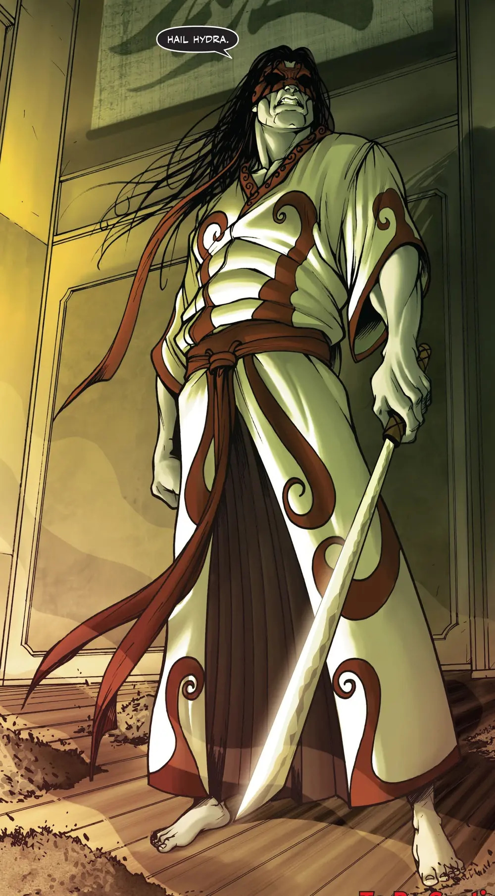
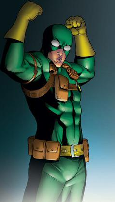
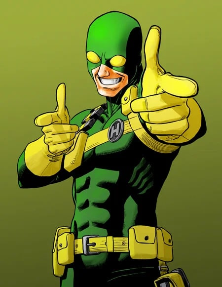
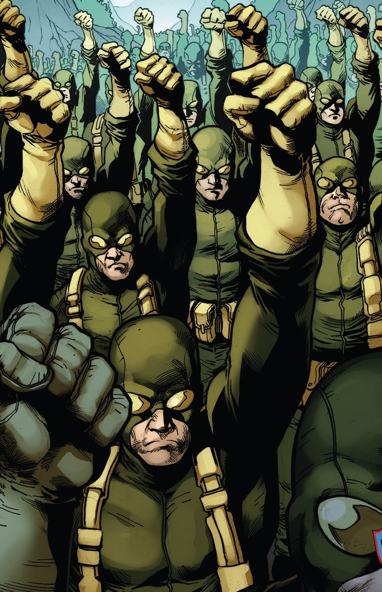
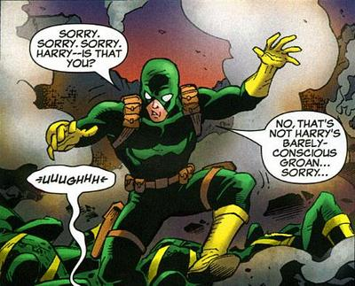
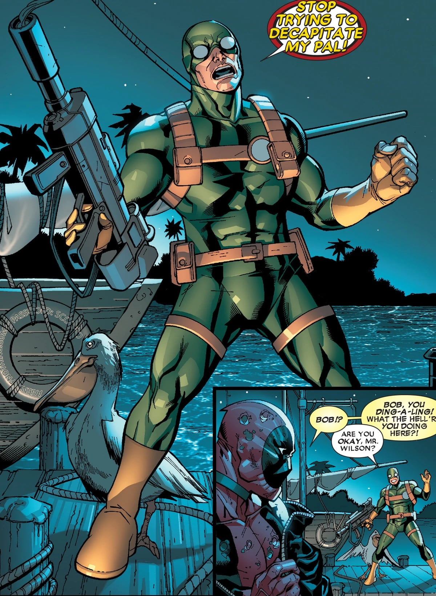

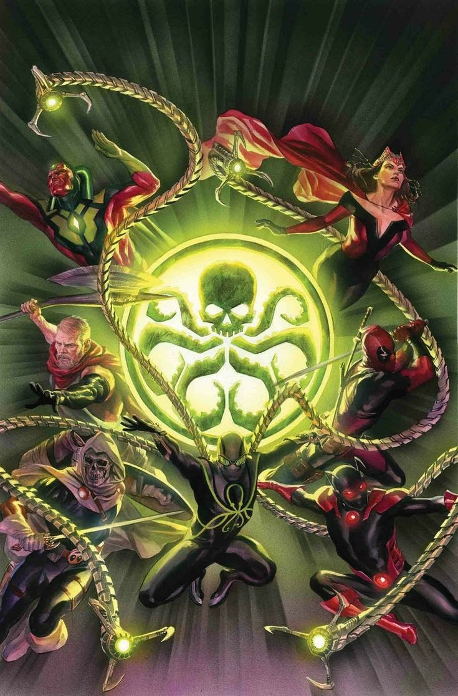
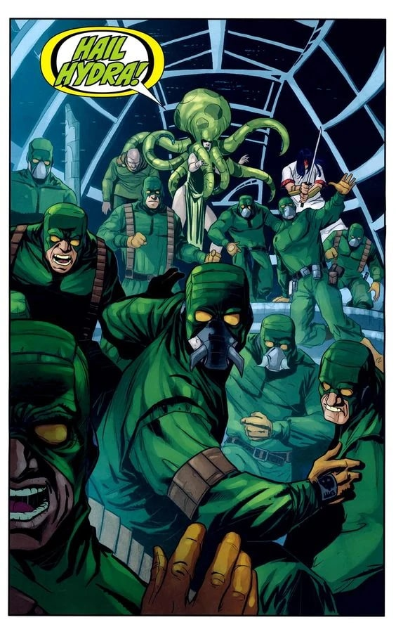